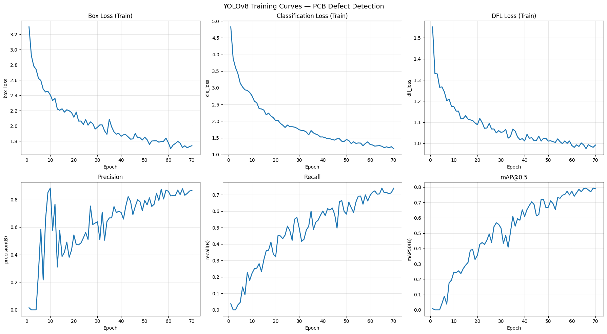
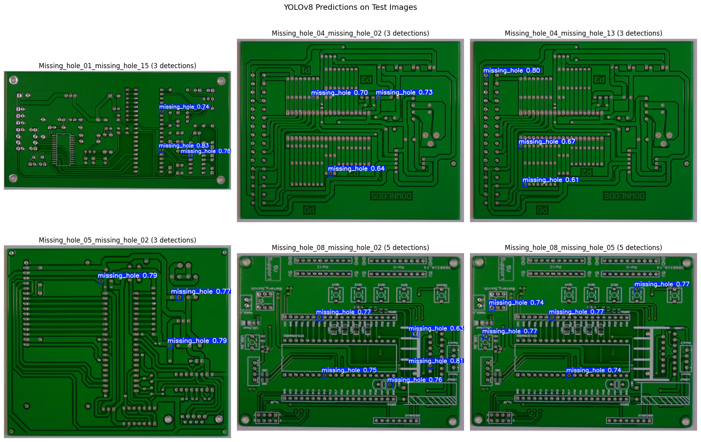
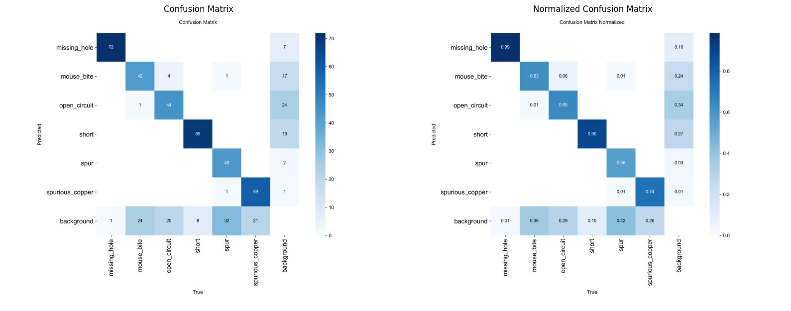
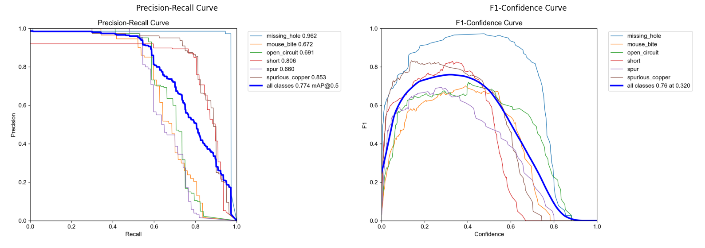

Notebook 03: YOLOv8 Training & Evaluation#
This notebook trains a YOLOv8 object detection model for PCB defect detection using transfer learning from COCO-pretrained weights.
Designed for Google Colab with GPU runtime (T4 16GB VRAM recommended).
Pipeline:
Load pretrained YOLOv8n (nano) — 3.2M parameters
Fine-tune on the Kaggle PCB Defects dataset (6 classes)
Evaluate with mAP, precision, recall, per-class metrics
Visualize training curves, predictions, and confusion matrix
Save best model for downstream notebooks
# Colab setup (uncomment when running on Colab)
# from google.colab import drive
# drive.mount('/content/drive')
# !pip install -q ultralytics
import shutil
from pathlib import Path
import cv2
import matplotlib.pyplot as plt
import numpy as np
import pandas as pd
from PIL import Image
from ultralytics import YOLO
# Paths — update for Colab if needed
DATASET_YAML = Path("../data/pcb-yolo/dataset.yaml")
PROJECT_DIR = Path("../models")
PROJECT_DIR.mkdir(parents=True, exist_ok=True)
CLASS_NAMES = {
0: "missing_hole", 1: "mouse_bite", 2: "open_circuit",
3: "short", 4: "spur", 5: "spurious_copper",
}
print(f"Dataset config: {DATASET_YAML}")
Dataset config: ../data/pcb-yolo/dataset.yaml
1. Load Pretrained YOLOv8#
We start with YOLOv8n (nano, 3.2M params) pretrained on COCO for fast iteration. If mAP@0.5 < 0.70, we can upgrade to YOLOv8s (11.2M params).
# Load YOLOv8n pretrained on COCO
model = YOLO("yolov8n.pt")
print(f"Model loaded: YOLOv8n")
print(f"Parameters: {sum(p.numel() for p in model.model.parameters()):,}")
Model loaded: YOLOv8n
Parameters: 3,157,200
2. Training Configuration#
Parameter |
Value |
Rationale |
|---|---|---|
|
100 |
Sufficient for convergence with early stopping |
|
10 |
Stop if no improvement for 10 epochs |
|
640 |
YOLOv8 default — good balance of detail vs memory |
|
16 |
Sized for Colab T4 (16GB VRAM) — reduce to 8 if OOM |
|
AdamW |
Better generalization than SGD for fine-tuning |
|
0.01 |
Default Ultralytics learning rate |
|
0.5 |
PCBs have no “up” — enable vertical flip |
|
90 |
PCBs can be rotated — enable rotation |
|
1.0 |
Helps with small defect detection |
# Train YOLOv8 on PCB defect dataset
# Skip training if results already exist (e.g., from a previous run)
results_csv_check = PROJECT_DIR / "yolov8_pcb" / "results.csv"
if results_csv_check.exists():
print(f"Training results already exist at {results_csv_check} — skipping training")
print(f"Delete {PROJECT_DIR / 'yolov8_pcb'} to retrain from scratch")
else:
# For Colab: set project to Google Drive path to survive disconnects
# COLAB_PROJECT = "/content/drive/MyDrive/pcb-training"
# For local: use ../models
train_project = str(PROJECT_DIR)
results = model.train(
data=str(DATASET_YAML),
epochs=100,
patience=10,
imgsz=640,
batch=16,
optimizer="AdamW",
lr0=0.01,
# Augmentation tuned for PCB images
flipud=0.5,
degrees=90.0,
mosaic=1.0,
# Checkpointing — on Colab, change to COLAB_PROJECT for Drive persistence
project=train_project,
name="yolov8_pcb",
save=True,
save_period=10,
exist_ok=True,
# Uncomment to resume interrupted training (especially useful on Colab):
# resume=True,
)
Training results already exist at ../models/yolov8_pcb/results.csv — skipping training
Delete ../models/yolov8_pcb to retrain from scratch
3. Training Curves#
We plot loss curves and validation metrics across epochs to verify convergence and check for overfitting.
# Plot training curves from results CSV
results_csv = PROJECT_DIR / "yolov8_pcb" / "results.csv"
if results_csv.exists():
df = pd.read_csv(results_csv)
df.columns = df.columns.str.strip()
fig, axes = plt.subplots(2, 3, figsize=(18, 10))
metrics = [
("train/box_loss", "Box Loss (Train)"),
("train/cls_loss", "Classification Loss (Train)"),
("train/dfl_loss", "DFL Loss (Train)"),
("metrics/precision(B)", "Precision"),
("metrics/recall(B)", "Recall"),
("metrics/mAP50(B)", "mAP@0.5"),
]
for ax, (col, title) in zip(axes.flat, metrics):
if col in df.columns:
ax.plot(df["epoch"], df[col], linewidth=2)
ax.set_xlabel("Epoch")
ax.set_ylabel(col.split("/")[-1])
ax.set_title(title)
ax.grid(True, alpha=0.3)
plt.suptitle("YOLOv8 Training Curves — PCB Defect Detection", fontsize=14)
plt.tight_layout()
plt.show()
else:
print(f"Results not found at {results_csv} — complete training first")

4. Validation Evaluation#
Run the best model on the held-out test split and report mAP, precision, recall, and per-class AP.
# Evaluate best model on test set
best_model_path = PROJECT_DIR / "yolov8_pcb" / "weights" / "best.pt"
if best_model_path.exists():
best_model = YOLO(str(best_model_path))
val_results = best_model.val(data=str(DATASET_YAML), split="test")
print("=== Test Set Evaluation ===")
print(f"mAP@0.5: {val_results.box.map50:.4f}")
print(f"mAP@0.5:0.95: {val_results.box.map:.4f}")
print(f"Precision: {val_results.box.mp:.4f}")
print(f"Recall: {val_results.box.mr:.4f}")
# Per-class metrics (AP, precision, recall, F1)
print("\nPer-class metrics:")
print(f"{'Class':<20} {'AP@0.5':>8} {'Precision':>10} {'Recall':>8} {'F1':>8}")
print("-" * 56)
for i in range(len(val_results.box.ap50)):
ap = val_results.box.ap50[i]
p = val_results.box.p[i] if hasattr(val_results.box, 'p') else float('nan')
r = val_results.box.r[i] if hasattr(val_results.box, 'r') else float('nan')
f1 = 2 * p * r / (p + r) if (p + r) > 0 else 0.0
print(f" {CLASS_NAMES[i]:<18} {ap:>8.4f} {p:>10.4f} {r:>8.4f} {f1:>8.4f}")
else:
print(f"Best model not found at {best_model_path}")
Ultralytics 8.4.22 🚀 Python-3.14.3 torch-2.10.0 CPU (Apple M4 Pro)
Model summary (fused): 73 layers, 3,006,818 parameters, 0 gradients, 8.1 GFLOPs
val: Fast image access ✅ (ping: 0.0±0.0 ms, read: 11612.4±2686.2 MB/s, size: 1288.9 KB)
val: Scanning /Users/mattmiller/Documents/Northwestern/Computer Vision/Notebooks/Final Project/data/pcb-yolo/labels/test.cache... 104 images, 0 backgrounds, 0 corrupt: 100% ━━━━━━━━━━━━ 104/104 27.3Mit/s 0.0s
Class Images Instances Box(P R mAP50 mAP50-95): 14% ━╸────────── 1/7 4.5s/it 1.3s<26.9s
Class Images Instances Box(P R mAP50 mAP50-95): 29% ━━━───────── 2/7 3.0s/it 3.0s<14.9s
Class Images Instances Box(P R mAP50 mAP50-95): 43% ━━━━━─────── 3/7 2.5s/it 4.8s<9.9s
Class Images Instances Box(P R mAP50 mAP50-95): 57% ━━━━━━╸───── 4/7 2.2s/it 6.6s<6.6s
Class Images Instances Box(P R mAP50 mAP50-95): 71% ━━━━━━━━╸─── 5/7 2.1s/it 8.3s<4.1s
Class Images Instances Box(P R mAP50 mAP50-95): 86% ━━━━━━━━━━── 6/7 2.0s/it 10.2s<2.0s
Class Images Instances Box(P R mAP50 mAP50-95): 100% ━━━━━━━━━━━━ 7/7 1.5s/it 10.5s
all 104 447 0.821 0.747 0.804 0.349
missing_hole 17 79 0.957 1 0.99 0.49
mouse_bite 17 72 0.793 0.694 0.75 0.317
open_circuit 18 77 0.742 0.805 0.89 0.379
short 17 75 0.835 0.88 0.901 0.392
spur 18 74 0.829 0.524 0.626 0.232
spurious_copper 17 70 0.772 0.579 0.669 0.282
Speed: 0.3ms preprocess, 81.4ms inference, 0.0ms loss, 0.1ms postprocess per image
Results saved to /Users/mattmiller/Documents/Northwestern/Computer Vision/Notebooks/Final Project/notebooks/runs/detect/val5
=== Test Set Evaluation ===
mAP@0.5: 0.8043
mAP@0.5:0.95: 0.3488
Precision: 0.8211
Recall: 0.7471
Per-class metrics:
Class AP@0.5 Precision Recall F1
--------------------------------------------------------
missing_hole 0.9904 0.9567 1.0000 0.9779
mouse_bite 0.7497 0.7928 0.6944 0.7404
open_circuit 0.8895 0.7419 0.8052 0.7723
short 0.9012 0.8347 0.8800 0.8568
spur 0.6256 0.8290 0.5241 0.6422
spurious_copper 0.6695 0.7716 0.5791 0.6616
Interpreting the Results#
mAP@0.5 (mean Average Precision at IoU 0.5) is the primary metric — it measures how well the model localizes defects with at least 50% overlap with ground truth. For PCB defect detection, a mAP@0.5 above 0.70 indicates the model reliably finds most defects.
mAP@0.5:0.95 is stricter, averaging across IoU thresholds from 0.5 to 0.95. This rewards precise localization — important for manufacturing where defect boundaries matter for root cause analysis.
Precision vs Recall tradeoff: In PCB inspection, recall is more important than precision. A missed defect (false negative) ships a defective board to customers, while a false positive only triggers unnecessary rework. Per-class metrics reveal which defect types the model handles well and where it struggles — smaller or visually subtle defects (e.g., mouse bites, spurs) tend to have lower AP than larger, more distinctive defects (e.g., missing holes, open circuits).
5. Prediction Visualization#
Visualize YOLOv8 predictions on test images — both correct detections and failure cases.
# Visualize predictions on test images
test_images_dir = Path("../data/pcb-yolo/images/test")
test_images = sorted(test_images_dir.glob("*"))[:6]
if best_model_path.exists() and test_images:
best_model = YOLO(str(best_model_path))
fig, axes = plt.subplots(2, 3, figsize=(18, 12))
for ax, img_path in zip(axes.flat, test_images):
results = best_model.predict(str(img_path), verbose=False)
annotated = results[0].plot()
annotated_rgb = cv2.cvtColor(annotated, cv2.COLOR_BGR2RGB)
ax.imshow(annotated_rgb)
n_det = len(results[0].boxes)
ax.set_title(f"{img_path.stem} ({n_det} detections)")
ax.axis("off")
plt.suptitle("YOLOv8 Predictions on Test Images", fontsize=14)
plt.tight_layout()
plt.show()
else:
print("Model or test images not available")

6. Confusion Matrix & PR Curves#
# Display confusion matrices and PR curves from validation
cm_path = PROJECT_DIR / "yolov8_pcb" / "confusion_matrix.png"
cm_norm_path = PROJECT_DIR / "yolov8_pcb" / "confusion_matrix_normalized.png"
fig, axes = plt.subplots(1, 2, figsize=(16, 7))
for ax, path, title in [
(axes[0], cm_path, "Confusion Matrix"),
(axes[1], cm_norm_path, "Normalized Confusion Matrix"),
]:
if path.exists():
img = Image.open(path)
ax.imshow(img)
ax.set_title(title)
else:
ax.text(0.5, 0.5, f"Not found:\n{path.name}", ha="center", va="center")
ax.axis("off")
plt.tight_layout()
plt.show()
# Display Precision-Recall curves
pr_curve_path = PROJECT_DIR / "yolov8_pcb" / "BoxPR_curve.png"
f1_curve_path = PROJECT_DIR / "yolov8_pcb" / "BoxF1_curve.png"
pr_paths = [(pr_curve_path, "Precision-Recall Curve"), (f1_curve_path, "F1-Confidence Curve")]
available_pr = [(p, t) for p, t in pr_paths if p.exists()]
if available_pr:
fig, axes = plt.subplots(1, len(available_pr), figsize=(8 * len(available_pr), 6))
if len(available_pr) == 1:
axes = [axes]
for ax, (path, title) in zip(axes, available_pr):
img = Image.open(path)
ax.imshow(img)
ax.set_title(title)
ax.axis("off")
plt.tight_layout()
plt.show()
else:
print("PR/F1 curve images not found — they are generated during model.val()")


7. Save Best Model#
Copy the best weights to the project models/ directory for use in downstream notebooks (04-ResNet, 06-Comparison, 07-ONNX, 08-Flask).
# Save best model for downstream use
models_dir = Path("../models")
models_dir.mkdir(exist_ok=True)
if best_model_path.exists():
dst = models_dir / "yolov8_best.pt"
shutil.copy2(best_model_path, dst)
print(f"Best model saved to {dst}")
print(f"Model size: {dst.stat().st_size / 1024 / 1024:.1f} MB")
else:
print("No best model to save — complete training first")
Best model saved to ../models/yolov8_best.pt
Model size: 6.0 MB